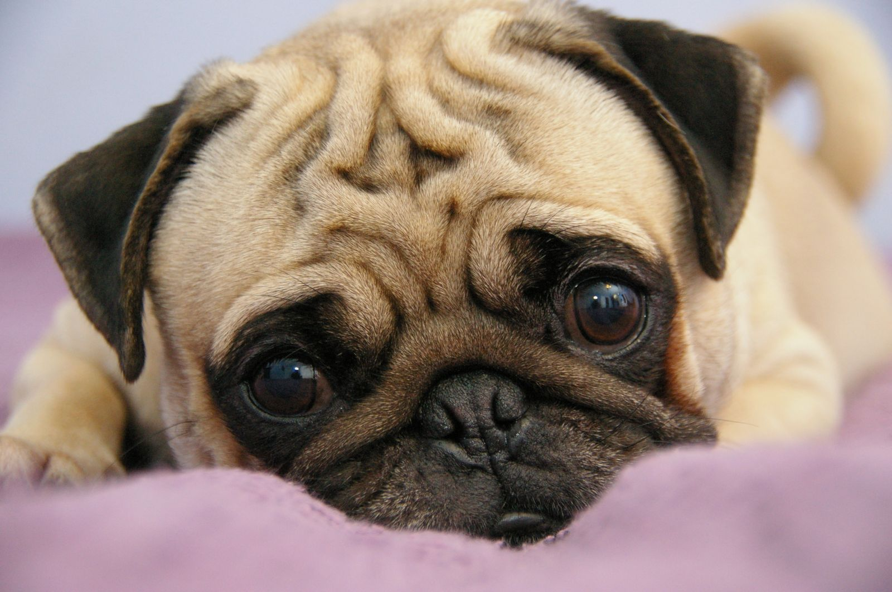

Домашние животные
Домашние животные – неотъемлемая часть нашей жизни еще с детства. Все мы бывали на даче у бабушки, мечтали о щенке, подкармливали птиц зимой… Домашние питомцы учат нас заботе и ответственности с ранних лет, а взамен мы получаем преданных друзей и нескончаемый источник радости. Каждый выбирает для себя любимое животное исходя из своих предпочтений: пушистую кошечку, поющую птичку, умиротворяющих рыбок… Здесь Вы найдете статьи о самых разнообразных домашних животных.
Шотландский вислоухий кот. Описание и фото шотландского вислоухого кота
Шотландский вислоухий кот или скоттиш-фолд — порода домашних кошек с характерными загнутыми вперёд и вниз ушами, что вызвано действием доминантного гена, который возник в результате естественной мутации и оказывающий влияние на хрящи во всём организме.
{kind=link}
Волнистый попугай – говорливый тенор. Описание и фото волнистых попугайчиков
Волнистый попугай – это птица, которая является популярнейшим домашним питомцем. Этих птиц полюбили за яркость и разнообразие окрасов, способность говорить и неприхотливость. Если Вы решили обзавестись таким пернатым другом, как волнистый попугайчик, будьте готовы, что они отличаются шумом и болтливостью. В этой статье Вы найдете много нового и интересного о волнистых попугайчиках.
{kind=link}
Домашняя обезьянка - мармозетка. Описание и фото мармозетки.
Мармозетка или карликовый игрун — вид приматов из семейства игрунковые. Этот примат маленьких размеров, распространённый в Южной Америке, обитает в верховьях бассейна Амазонки в Боливии, Бразилии, Колумбии, Эквадоре и Перу. Находится в списке охраняемых видов, перемещение которых через границу Таможенного Союза ограничено.

Мопс. Описание и фото мопса.
Мопс — порода декоративных собак. Мопсы были привезены из Китая в Европу в XVI веке и были популярны в Западной Европе и Нидерландах. В Соединённом Королевстве в XIX веке королева Виктория развила страсть к мопсам, которую она передала другим членам королевской семьи. Мопсы известны тем, что являются общительными и нежными собаками-компаньонами.
{kind=link}
Шиншилла - вид грызунов семейства шиншилловых. Описание и фото шиншиллы.
Забавные зверьки шиншиллы нередко становятся любимыми домашними питомцами многих семей. Это одни из самых интересных грызунов с мягким пушистым мехом и своеобразным характером, которые всегда причислялись к категории диких. К приобретению такого питомца необходимо правильно подготовиться, узнать об особенностях ухода, кормления и других важных нюансах домашнего содержания.

Описание рыбки Гуппи.
Гуппи — пресноводная живородящая рыба семейства пецилиевых. Обитает в Южной Америке. Популярная и неприхотливая аквариумная рыбка.